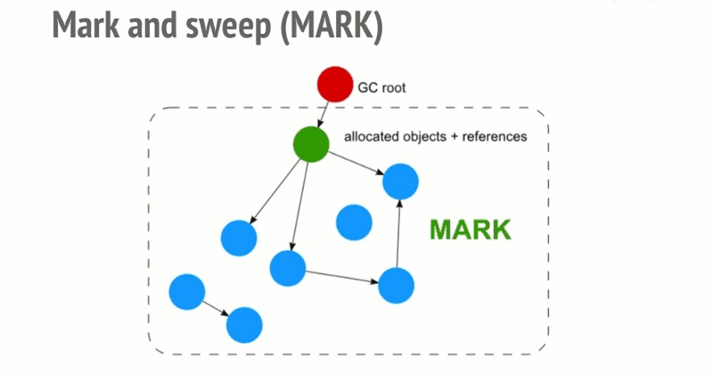

推荐阅读 2018.05
Week 1
1、函数节流和函数去抖
2、Different Types Of Observers Supported By Modern Browsers
介绍了四种观察者对象
- Intersection Observer dom元素交叉
- Mutation Observer dom元素修改
- Resize Observer dom元素大小变化
- Performance Observer 性能监控
3、滑向未来（现代 JavaScript 与 CSS 滚动实现指南）👍
文章介绍了在现代浏览器中，关于页面滚动的一系列问题与实现方式，对于构建一个渐进式地、高性能地解决页面滚动相关问题非常有帮助。
4、How to escape async/await hell
大家都说async和await是异步的终极解决方案。然而文章指出了两种使用async和await处理异步的问题。其实问题本身不在于async和await，而在于使用者对其的理解与应用方式。即时使用“终极方案”，也要避免写出“不地道”的语句。
5、EventListenerOptions - passive event listener
介绍了touch事件是如何影响页面滚动性能，并且建议使用passive event listener来缓解滚动性能问题。
6、Resource Hints - W3C Working Draft 15 January 2018
7、Preload - W3C Candidate Recommendation 26 October 2017
Week 2
1、CSS中最全的换行处理方式
word-break: break-all / break-word / keep-all
overflow-wrap: break-word
hyphens: manual / auto
line-break: loose / strict / anywhere
text-wrap: balance
<wbr>
2、An Overview of JavaScript Testing in 2018
一篇关于javascript测试的比较全面与详细的综述文章
3、 in webpack
简单介绍了prefetch与preload。同时，介绍了如何在webpack中，使用动态import时开启prefetch或preload
Use import(/* webpackPrefetch: true */ "...") for prefetching
4、Two Years of Functional Programming in JavaScript: Lessons Learned
5、How JavaScript works: an overview of the engine, the runtime, and the call stack
简单介绍了js引擎的情况，以及调用栈 (call stack)
6、How JavaScript works: inside the V8 engine + 5 tips on how to write optimized code
主要是以V8为例来介绍js引擎的内部工作原理。V8内部的两种compiler——full-codegen and Crankshaft（5.9以后换成了Ignition and TurboFan）。V8内部使用inline、hidden class、inline caching等技术来优化js。基于这些优化实现，作者提出了5个代码优化的小建议：
- order of object properties
- avoid dynamic properties
- executes the same method repeatedly
- avoid sparse arrays where keys are not incremental numbers
- tagged values
7、How JavaScript works: memory management + how to handle 4 common memory leaks
虽然js不像C需要开发人员手动管理内存，但是了解内存管理相关知识可以助于我们避免一些错误，写出更好的代码。本文介绍了memory的生命周期，并且详细介绍了常用的两种GC策略：
Reference-counting和Mark-and-sweep algorithm（V8所使用的）。

在js中经常会出现的四种内存泄露问题：
- Global variables
- Timers or callbacks that are forgotten
- Closures
- Out of DOM references
Week 3
1、How JavaScript works: Event loop and the rise of Async programming + 5 ways to better coding with async/await
入门级的event loop介绍文章
2、How JavaScript works: The building blocks of Web Workers + 5 cases when you should use them
使用Web Worker来进行一些CPU密集型的操作，异步处理那些阻塞的long task。一些常用的场景包括：Ray tracing、Encryption、Prefetch data、PWA、Spell checker、CSV parse…
3、Comet：基于 HTTP 长连接的“服务器推”技术
介绍了如何使用comet技术来实现服务器推。comet技术包括了：
- 基于ajax的长轮询，“拉”模式
- 基于iframe的流模式